帮助与支持
查阅术语、联系开发者和引用 LemmaLoom，各有一个专门的窗口。其中两个在帮助菜单中，另一个在 LemmaLoom 菜单中：
| 命令 | 打开的内容 |
|---|---|
| 帮助 ▸ 术语表 | LemmaLoom 中各种术语和标签的简短释义，附有搜索栏 |
| 帮助 ▸ 发送反馈 | 用来撰写错误报告、提出功能建议或问题的窗口，写好的内容会在你的邮件程序中变成一封邮件 |
| LemmaLoom ▸ 关于 LemmaLoom | 版本号和构建号、MLA 和 APA 格式的引文，以及 LemmaLoom 所含组件的许可证 |
这三个命令都会在主窗口旁打开一个单独的窗口。如果窗口已经打开，再次选取该命令会激活现有的窗口。
本章的示例都使用第 1 章“简介”中示例项目一节介绍的“气候辩论”项目。如果想亲自练习这些命令，请用文件 ▸ 导入 ▸ 示例项目导入这个项目。
帮助菜单
macOS 会在帮助菜单的最上方加一个搜索栏，用来搜索 LemmaLoom 各个菜单中的命令名称。例如搜索 活动，活动就会出现在搜索结果的建议中。将鼠标指针悬停在这一项上，macOS 会打开窗口菜单，并指向该命令所在的位置。按 ⌘?（在美式键盘上为 ⇧⌘/）会打开帮助菜单中的这个搜索栏。
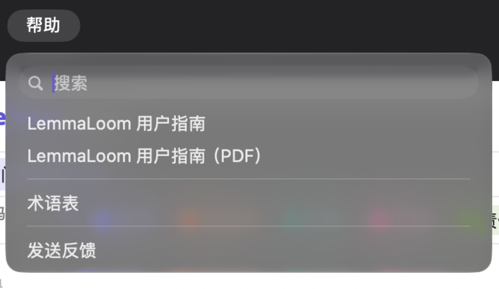
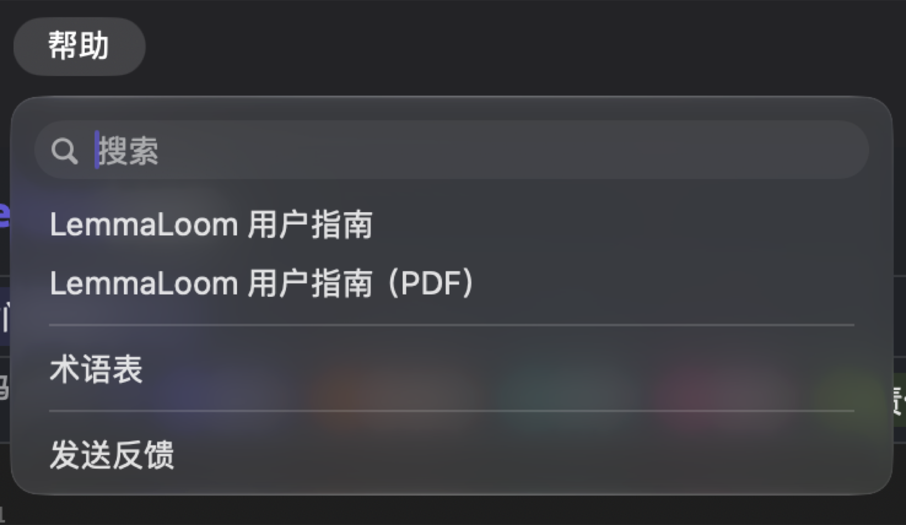
术语表
术语表解释质性分析中使用的词汇，如编码、片段和备忘录，也解释语法分析中使用的标记。例如，标记 NNS 标示复数名词，nsubj 标示作小句主语的名词。检查器中显示的统计量，以及状态栏和图示中的缩写，术语表中也都有解释。术语表可以一直开在项目旁边。
术语表中的每个条目只简要说明标签表示什么。
术语表对所有项目都一样，总是以界面语言显示。界面为中文时，名称和释义都是中文，按名称排序的类别也遵循中文的排序规则（见第 24 章“设置与外观”中的界面语言）。NNS、nsubj 这类缩写不随界面语言改变，因为它们就是语法分析实际使用的标记。
术语表窗口
术语表窗口的边栏中有一项全部，下面是另外十二项，即术语表的各个类别。每个类别旁显示它包含的术语数。右侧条目的上方是搜索栏。
查找条目
- 选取帮助 ▸ 术语表。
- 在边栏中点按全部，浏览所有类别；或者点按某个类别，只在其中查找。
- 在搜索栏中输入一个词或一个标签，例如
nsubj。
列表随着输入不断缩小。条目的名称、缩写或释义中只要含有你输入的内容，就会被找到。搜索不区分大小写，但区分变音符号，所以如果想找到释义中含有 schläft 的 sb 又不想输入 ä，可以搜索 schl。
选中全部时，条目按类别分组，滚动时当前类别的名称显示在列表顶部。没有匹配结果的类别不显示。完全没有匹配结果时，列表显示无匹配项。边栏中的数目不随搜索变化。
由于搜索也包括条目的释义，较短的搜索词可能找到意料之外的结果。选中全部并搜索 主语，会得到许多结果，分布在大多数类别中。其中有语法功能主语、表示主语的各种依存关系、小句的短语标记（释义为主语加谓语）、语法特征格，以及句型中使用的字母 S。点按另一个类别可以缩小列表，之前的搜索词仍然有效。选中依存关系并用同样的搜索词搜索，结果减少到七个。其中四个标有 EN ZH（csubj、csubjpass、nsubj 和 nsubjpass），三个标有 DE（sb、sbp，以及名称为形式主语es的 ep）。
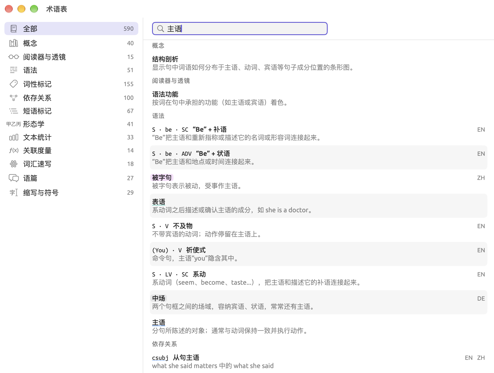
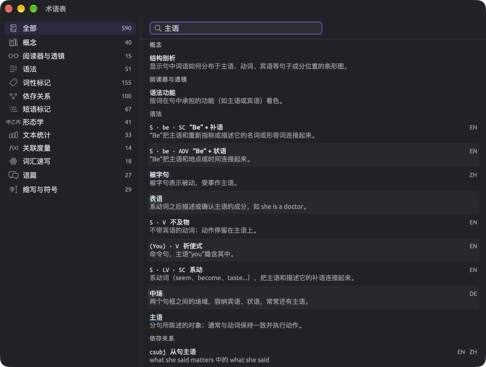
阅读条目
一个条目最多由四部分组成：
- 条目的缩写，用等宽字体显示，如
nsubj、MDD或¶。 - 条目的名称，用粗体显示，如名词性主语。
- 缩写和名称的右侧是一组语言缩写，表示该条目适用于哪些语言：EN 表示英语，DE 表示德语，ZH 表示中文。没有标明语言的条目适用于全部三种语言。
- 最后，名称后面是用普通字体显示的释义。词性标记和依存关系的释义往往是一个例子。例如
nsubj的释义是 “she runs”中的 she，意思是名词性主语 she 出现在小句 she runs 中。
在形态学下，语法特征的每个取值先显示语法分析给出的原样字符串，如 Number=Plur，然后是描述它的语法术语复数。语法特征本身（Number）有自己的条目和释义，排在这些取值上方。
有些特殊条目代表 LemmaLoom 自带的透镜会自动标注的内容。这类条目的缩写（没有缩写时则是名称）以该透镜的颜色和样式显示，方便你把这种颜色直接与阅读器中文本上高亮显示的概念联系起来。将鼠标指针悬停在带颜色的词上，可以看到该透镜的名称。如果你在设置的透镜面板中自定义了某个透镜标注项的颜色或样式，这里的颜色也会随之改变（见第 24 章“设置与外观”中的透镜面板）。
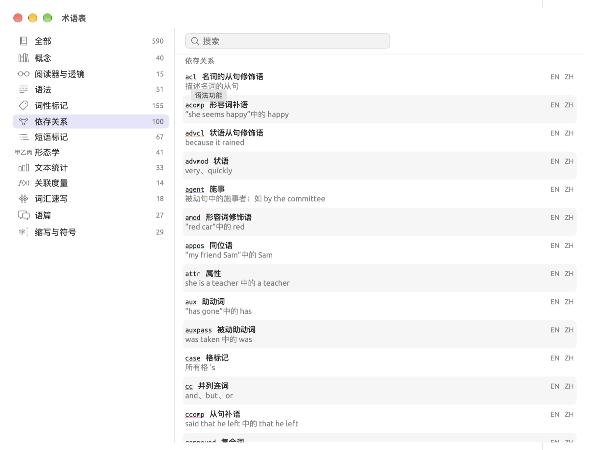
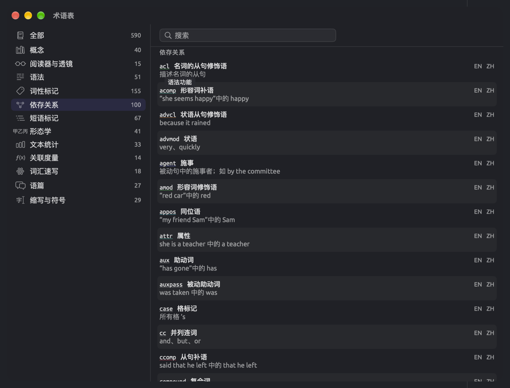
缩写、名称和释义都可以分别选中，然后按 ⌘C 拷贝。
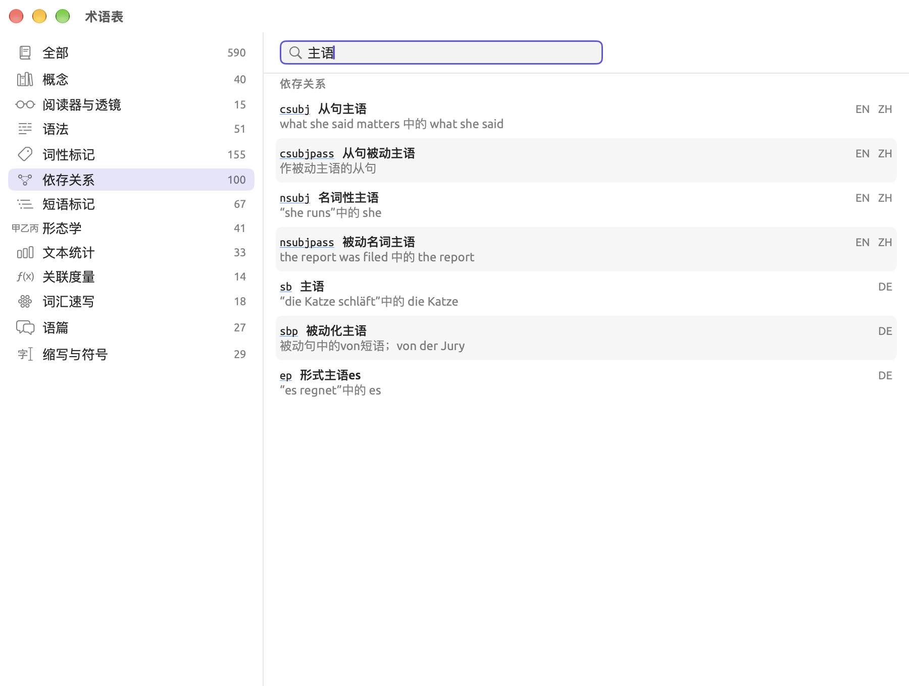
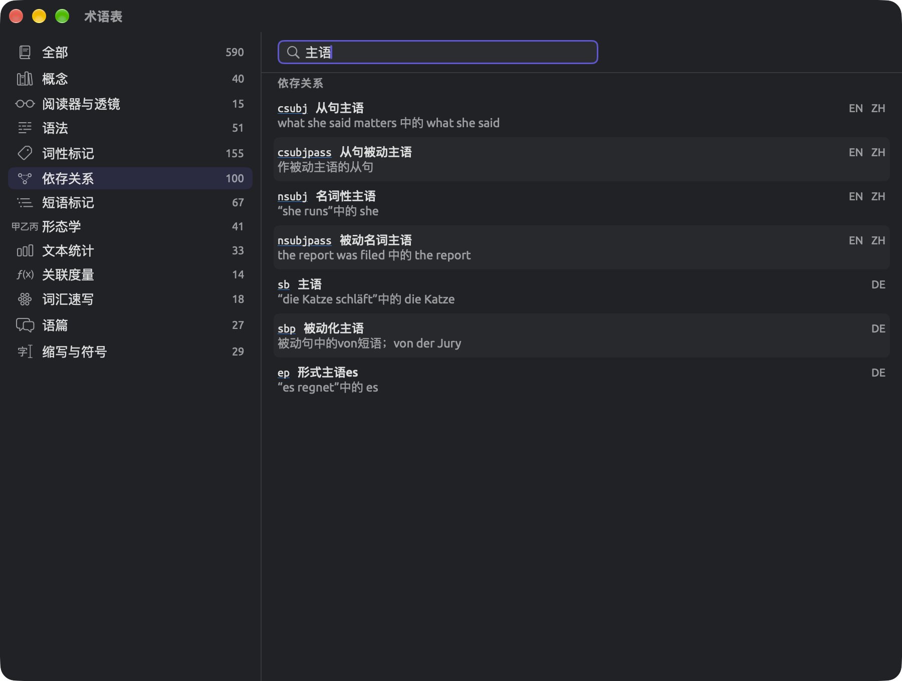
发送反馈
帮助 ▸ 发送反馈会打开一个窗口，你可以在其中撰写错误报告，或者向开发者提出功能建议或问题。撰写邮件会把你写好的内容变成一封发往 info@lemmaloom.app 的邮件，在你的邮件程序中打开。
撰写消息
- 选取帮助 ▸ 发送反馈。
- 在窗口顶部点按消息的类型（错误报告、功能建议、问题或其他）。窗口打开时选中的是错误报告。
- 在内容下方的框中输入你的消息。应该写些什么，见如何写好问题报告。
- 保持勾选附上系统信息，邮件中就会加上它下面那一行显示的信息；取消勾选则不加。
- 点按撰写邮件。
- 在邮件程序中附上截屏，然后发送邮件。
点按撰写邮件或取消按钮后，窗口会关闭；再次打开时，窗口是空白的。如果不确定邮件程序的设置是否正常，请在点按撰写邮件之前先拷贝较长的消息（先按 ⌘A，再按 ⌘C）。
消息为空或只有空白字符时，撰写邮件按钮不可用，悬停提示为内容为空。


邮件的内容
邮件主题标明这是哪一类邮件。
| 消息类型 | 邮件主题 |
|---|---|
| 错误报告 | LemmaLoom · Bug report |
| 功能建议 | LemmaLoom · Feature request |
| 问题 | LemmaLoom · Question |
| 其他 | LemmaLoom · Feedback |
勾选附上系统信息会在消息下方加上一行分隔线（--）和四行信息：
| 行 | 示例 | 含义 |
|---|---|---|
| 1 | LemmaLoom 1.2 (1) | LemmaLoom 的版本，括号中是构建号 |
| 2 | macOS 版本27.0（版号27A200） | macOS 的版本 |
| 3 | arm64 · 8 GB | 处理器类型（Apple 芯片为 arm64，Intel 为 x86_64）和 Mac 安装的内存 |
| 4 | zh-Hans | 界面语言（en、de 或 zh-Hans） |
窗口中显示的是同样的信息，只是全部排在一行，用圆点隔开。取消勾选该复选框后，这一行会变淡。
LemmaLoom 只添加分隔线和这几行，发送之前，你可以在草稿中删去其中任意一行。
邮件程序没有打开时
撰写邮件会在你电脑上的默认邮件程序中新建一封邮件。默认邮件程序在“邮件”中设置：选取邮件 ▸ 设置…，点按通用，然后在默认的电子邮件阅读程序菜单中选择。如果“邮件”是你的默认邮件程序，而它还没有添加账户，它会请你添加一个。
如果你用网页邮箱收发邮件，请从发送反馈窗口中拷贝反馈的正文（先按 ⌘A，再按 ⌘C），在网页邮箱中新建一封空白邮件，然后把反馈粘贴进去。再把邮件发送到 info@lemmaloom.app，这个地址也可以从窗口左下角拷贝。系统信息那一行，请照窗口中的显示输入到邮件中。
如何写好问题报告
一份很有帮助的错误报告会写明导致问题的详细步骤。
动笔之前
简单检查一下，往往就能解决问题，或者找到方向：
- 将鼠标指针悬停在不可用的按钮上。如果按钮位于 LemmaLoom 的窗口或对话框中，悬停提示会说明它目前为什么不可用（见第 1 章“简介”中的体例约定）。这通常是因为命令要等某件事完成后才能执行，例如为文档建立索引。
- 如果某个文档建立索引失败，导航栏中该文档的名称旁会出现一个红色警告三角形。将鼠标指针悬停在三角形上可以看到问题所在，然后可以右键点按该文档，选取重试索引（见第 21 章“分析与索引”中的建立索引失败时）。
- 完全退出 LemmaLoom，重新打开，再试一次刚才的操作。
- 在另一个文档上，或者在只含一个短文档的新项目中，执行完全相同的操作。如果问题只出现在这一个文档上，请在报告中说明。
- 在 App Store 中查看更新，确认你用的是最新版本的 LemmaLoom。
报告中应写些什么
- 首先，用一句话说明你当时想做什么。
- 然后列出导致问题的操作步骤，每行一步。菜单、按钮和输入栏请使用 LemmaLoom 中的名称。
- 说明你预期的结果和实际发生的情况。
- 请提供错误消息的原文，能拷贝就拷贝，不能拷贝就照原样输入。
- 说明问题是每次都出现、偶尔出现，还是只出现过一次。
- 另外，请写明文档的类型（文本文件、PDF、网页或录音）、语言和大致长度，以及项目中有多少个文档。
- 也请附上系统信息，勾选附上系统信息就会自动加上。
要截取整个窗口，可以按 ⇧⌘4，再按空格键，然后点按该窗口，图片会自动存储到“桌面”文件夹中。按 ⇧⌘5 则会显示其他截屏选项。邮件在邮件程序中打开后，就可以把截屏附上。
报告示例
假设“气候辩论”项目中的 PDF“2024 热浪报告”未能完成索引。一份有用的错误报告可以这样写：
“2024 热浪报告”是我的项目中的一个 PDF 文档，它的索引一直无法完成。边栏中它的状态图标是一个红色警告三角形，悬停提示为“此文档的索引失败。”
我是用“文件 ▸ 导入 ▸ 文档”导入它的。语言是中文，共六页。在阅读器中，一切看起来都正常，只有那张显示各地区气温读数的表格变成了一个个数字，每个数字单独占一行。在“活动”窗口中点按“重试索引”，大约一分钟后又失败了。退出并重新启动 LemmaLoom 之后，结果没有变化。项目中其余 14 个文档都已成功完成索引。
我预期这份报告会像项目中的其他文档一样完成索引。附件是阅读器中这张表格的截屏。
消息下方是四行本机的系统信息。
如果报告只写一句索引不起作用，可能要来回询问好几次，才能真正着手处理。这个示例则写明了已经试过哪些办法，以及其余文档都已成功完成索引。开发者由此可以判断，问题只出现在为这一个 PDF 文档建立索引的过程中。
LemmaLoom 意外退出时
软件意外退出时，macOS 会显示一个崩溃报告窗口。窗口中有对所遇问题的描述，旁边有一个报告…按钮。用这个按钮生成的报告会发送给 Apple；只有当你在系统设置 ▸ 隐私与安全性 ▸ 分析与改进中打开了与App开发者共享选项时，报告才会转给开发者。
你也可以自己发送报告：
- 点按消息中的报告…。
- 选中报告的文本并拷贝（⌘C）。
- 重新打开 LemmaLoom，选取帮助 ▸ 发送反馈。
- 把报告粘贴到消息框中。
- 在报告上方补充几行，说明 LemmaLoom 退出前你正在做什么。崩溃报告能显示程序在哪个位置崩溃；你补充的几行则说明你当时在用哪个文档或哪个命令。
如果 LemmaLoom 一启动就再次崩溃，请拷贝报告，用邮件发送到 info@lemmaloom.app。如果想附上 LemmaLoom 以前的崩溃报告，请打开“控制台”应用（位于“应用程序”文件夹的“实用工具”中），找到崩溃报告。
功能建议和提问
提出功能建议时，请说明你的研究需求，而不是你设想的控件。请写明你处理的是什么材料，需要在材料中查找、计数或比较什么，以及打算如何使用得到的结果。如果你的建议依据的是文献中提到的某种方法，请附上文献出处。在软件工程领域，这称为用户故事（User Story），即从用户的角度出发、详细说明他们想做什么的叙述。开发者可以把用户故事转化为技术需求和开发计划，所以你不必操心任何技术细节。
关于 LemmaLoom
要查看 LemmaLoom 的版本号、引文和所含组件的许可证，请选取 LemmaLoom ▸ 关于 LemmaLoom。窗口最上方是名称 LemmaLoom，后面是版本（如版本 1.2 (1)）。先显示的是版本号，与 App Store 上显示的一致。括号中的是构建号。
接下来是开发者信息、版权信息和一行特别致谢。然后是打赏开发者，点按这个链接会打开一个窗口，你可以在其中通过 App Store 打赏。再往下是引用 LemmaLoom，按两种引文格式给出引文。许可证完整列出 LemmaLoom 使用的组件及其许可证。
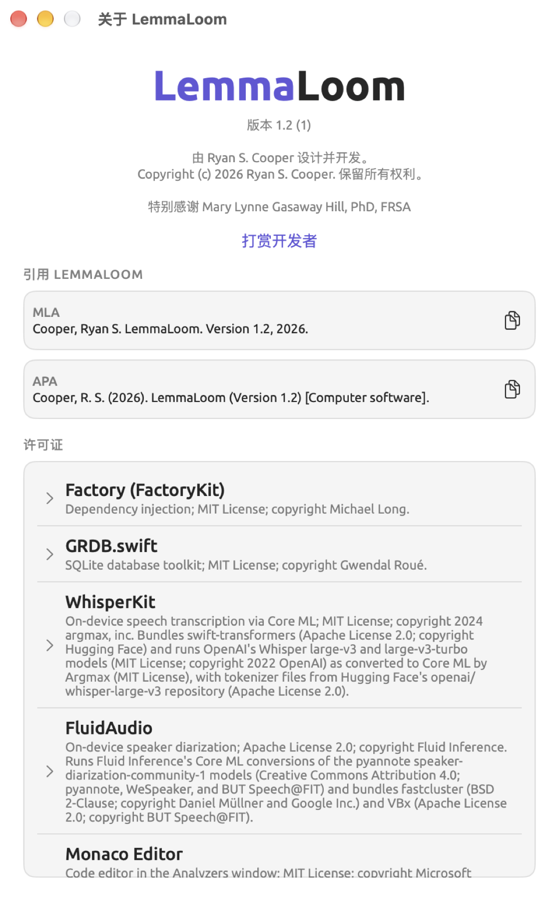
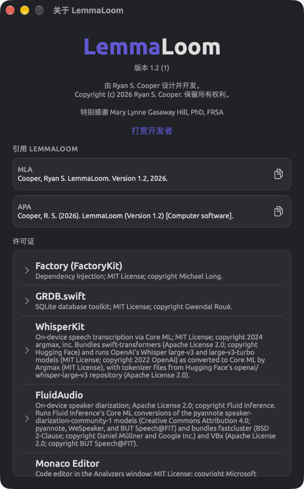
引用 LemmaLoom
引用 LemmaLoom会为你生成两种格式的引文。
| 格式 | 引文包含的内容 |
|---|---|
| MLA | 开发者的姓名，姓在前；标题 LemmaLoom；版本；年份 |
| APA | 开发者的姓和名字首字母；括号中的年份；标题，括号中是版本；以及说明 [Computer software] |
要拷贝引文，请点按引文旁边的按钮，它的图标是两张重叠的纸。也可以选中引文本身，按 ⌘C 拷贝所选文本。拷贝时，按钮会短暂显示一个对勾。
引文中的年份取自 Mac 时钟上的当前年份。无论选择哪种界面语言，引文总是使用英文。
许可证
许可证列出 LemmaLoom 包含的程序库、模型、语言数据和字体。每个条目都有名称和说明，说明中写明许可协议，大多数条目还写明版权所有者。无论界面语言是什么，许可证的名称、说明和文本始终是英文。点按某个条目，会显示一份或多份许可证全文；再次点按则隐藏。许可证文本可以选中并拷贝。
名称以 (data) 结尾的条目表示只使用了该项目的数据，没有使用代码，这些数据可能是训练好的模型，也可能是词形表。
这些条目中还列出了转录模型、说话人分离模型和语法分析模型及其作者。
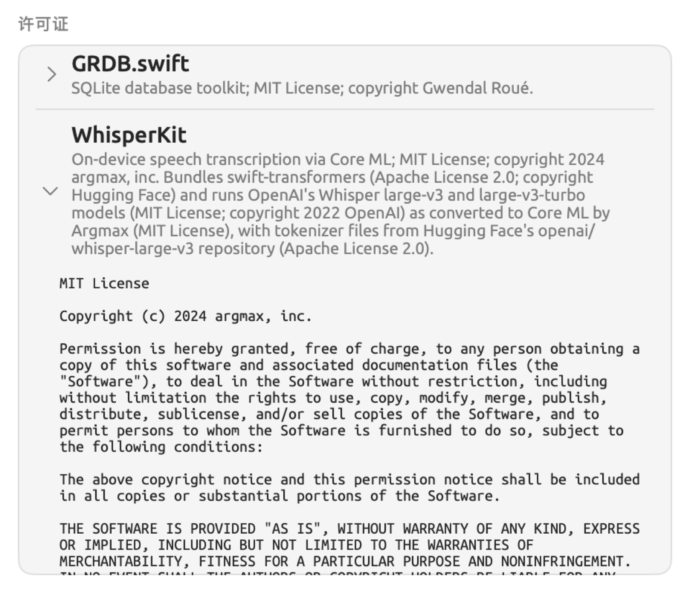
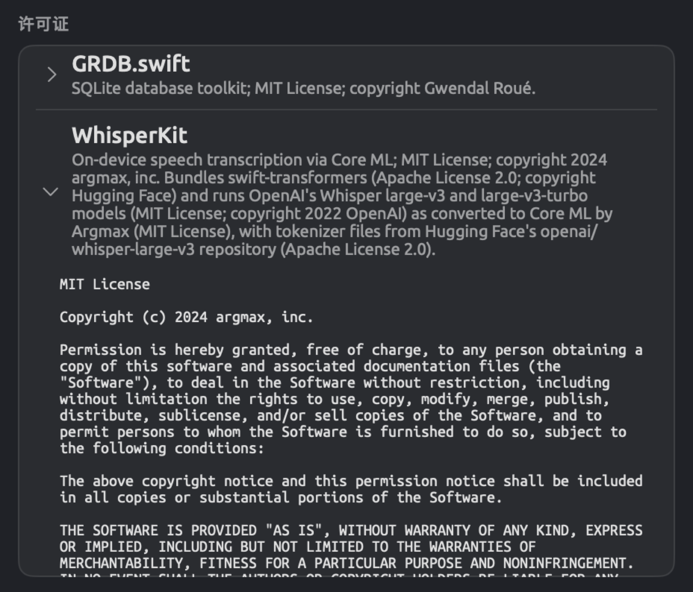